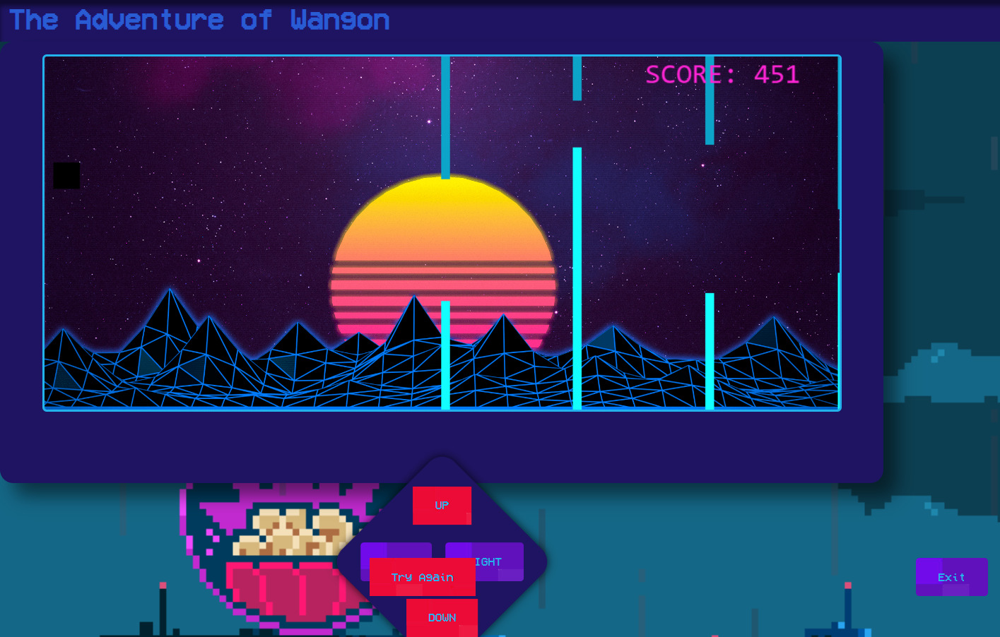
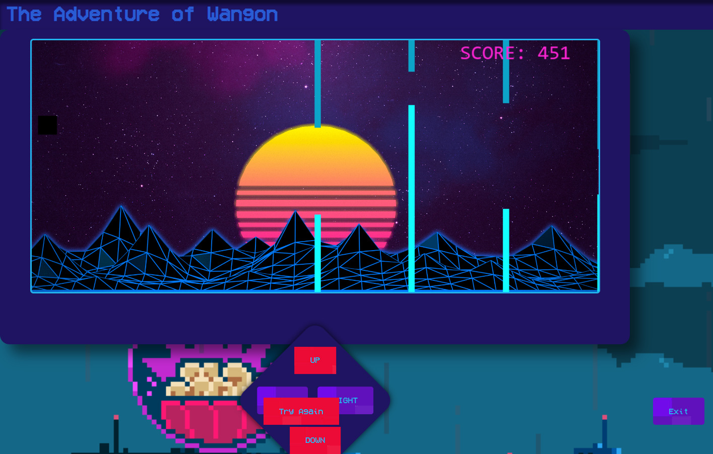

RF Engineer
July 2023–November 2024Dinamikon Inovasi Teknologi • Full Time
Performing company data input neatly and systematically. Compiling site documentation to perform E-ATP. Integration of 2G, 3G, LTE, and 5G networks. Leading the integration and commissioning of 2G to 5G networks in the Sumbagteng area. Managing field technical teams and ensuring completion of tasks according to safety standards and project timelines.